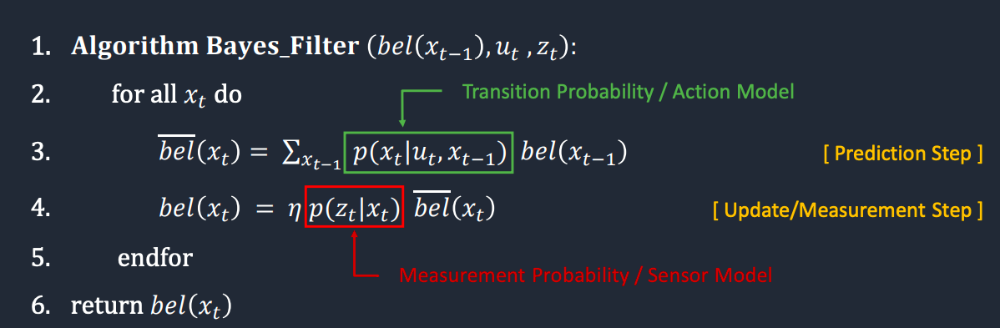
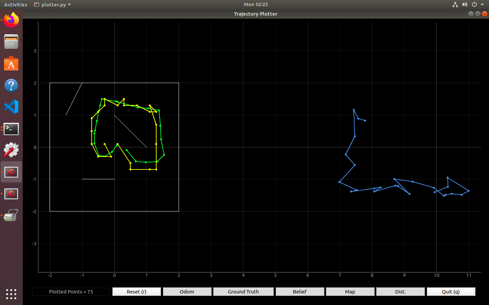

Lab 8
Grid Localization using Bayes Filter
After writing out pseudocode to implement a Bayes Filter in the last lab, this week was focused on fleshing out the proposed program. The Bayes Filter code takes in sensor data, calculates probabilities, and plots the belief of the robot as it moves around its environment.
The simulated robot took time at the top of the program to execute its programmed motion around its environment in order to gather sensor data. At every coordinate, it would stop and rotate 360 degrees to gather 18 pieces of sensor data from the same distance from obstacles, just varying degrees. Once this was done, the robot repeated its trajectory and utilized this observed sensor data, along with real-time values from its odometry, to not only “sense” where it was but (more importantly) predict where it was.
In addition to the helper functions provided by the robot.py interface, I imported a few functions from the math library in Python. These functions (atan2, pi, and hypot) were used within the compute_control function to calculate the control sequence of the robot between two given poses (x, y, theta).
def compute_control(cur_pose, prev_pose): """ Given the current and previous odometry poses, this function extracts the control information based on the odometry motion model. Args: cur_pose ([Pose]): Current Pose prev_pose ([Pose]): Previous Pose Returns: [delta_rot_1]: Rotation 1 (degrees) [delta_trans]: Translation (meters) [delta_rot_2]: Rotation 2 (degrees) """ #this is equal to the amount of translational change in x delta_x = cur_pose[0] - prev_pose[0] #this is equal to the amount of translational change in y delta_y = cur_pose[1] - prev_pose[1] #this is equal to the amount of rotational change in yaw (converted from radians to degrees) #angular change due to a change in position is equal to tan of change in y/change delta_turn = atan2(delta_y, delta_x)*180/pi #this is equal to the rotational change from the starting angle delta_rot_1 = loc.mapper.normalize_angle(delta_turn - prev_pose[2]) #this is equal to the Euclidean distance between the starting and ending points #delta_trans = sqrt((delta_x ** 2) + (delta_y ** 2)) delta_trans = hypot(delta_x, delta_y) #this is equal to the rotational change from the ending angle delta_rot_2 = loc.mapper.normalize_angle(cur_pose[2] - delta_turn) return delta_rot_1, delta_trans, delta_rot_2
The next function is odom_motion_model, which takes in the control information from the previous function, as well as the previous and current poses of the robot, in order to output the transition probability. This is equivalent to the conditional probability of the current state, given the previous state and the control information. This function ended up being the most pivotal to the integrity of the simulated data, as my original implementation relied on local variables too heavily, which caused my kernel to break a few times.
def odom_motion_model(cur_pose, prev_pose, u): """ Odometry Motion Model Args: cur_pose ([Pose]): Current Pose prev_pose ([Pose]): Previous Pose (rot1, trans, rot2) (float, float, float): A tuple with control data in the format format (rot1, trans, rot2) with units (degrees, meters, degrees) Returns: prob [float]: Probability p(x'|x, u) “”” #This is an implementation of the Bayes filter following the Markov assumption on state x_t (cur_pose) #Transition probability/action model for the prediction step #It specifies how the robot state evolves over time as a function of robot controls u_t #p(x'|x,u) = (p(x,u | x') * p(x')) / (p(x,u)) = eta * p(x,u | x') * p(x') computed_control = compute_control(cur_pose, prev_pose) #calculate probability of each condition #left as comments for understanding #prob1 = loc.gaussian(delta_trans, u[0], loc.odom_trans_sigma) #prob2 = loc.gaussian(delta_rot_1, u[1], loc.odom_rot_sigma) #prob3 = loc.gaussian(delta_rot_2, u[2], loc.odom_rot_sigma) #multiplication due to independence between event probabilities #prob = prob1*prob2*prob3 # faster implementation: prob = loc.gaussian(computed_control[0], u[0], loc.odom_rot_sigma) * loc.gaussian(computed_control[1], u[1], loc.odom_trans_sigma) * loc.gaussian(computed_control[2], u[2], loc.odom_rot_sigma) return prob
For the Bayes filter to be properly applied, steps must occur over all possible current events. In the case of the robot, this means all possible combinations of x, y, and theta must be tried for the prediction_step and update_step functions. There will naturally be events whose probabilities are zero or extremely close to zero (i.e. less than 0.0001), and these can be ignored in future calculations for the belief probabilities.
def prediction_step(cur_odom, prev_odom): """ Prediction step of the Bayes Filter. Update the probabilities in loc.bel_bar based on loc.bel from the previous time step and the odometry motion model. Args: cur_odom ([Pose]): Current Pose prev_odom ([Pose]): Previous Pose """ #MAX_CELLS_X: Maximum number of grid cells in the X direction. #MAX_CELLS_Y: Maximum number of grid cells in the Y direction. #MAX_CELLS_A: Maximum number of grid cells in the theta direction ('A' stands for 'Angle'). #OBS_PER_CELL: Number of observations per cell. This is set to 18. #obs_views: A 4D Numpy array where the first three dimensions represents the cell index (cx, cy, ca) and the fourth dimension represents the precached true measurements (views) #this is equal to the control information of the robot u = compute_control(cur_odom, prev_odom) #this is to find the probability of p(x'|x,u), state transition probability #prob = odom_motion_model(cur_odom, prev_odom, u) #these loops are to step through every possible previous state (x,y.a) #this is because every state in "bel_bar" needs to be updated based on "bel" from the previous time step and the odometry motion model for x in range(0,loc.mapper.MAX_CELLS_X): for y in range(0,loc.mapper.MAX_CELLS_Y): for a in range(0,loc.mapper.MAX_CELLS_A): #this is equivalent to skipping a cell if the probability of its state is 0 (since 0.0001 is close to 0) if loc.bel[x, y, a] > 0.0001: #these loops are to step through every possible previous state (x,y.a) #this is because every state in "bel_bar" needs to be updated based on "bel" from the previous time step and the odometry motion model for curr_x in range(0,loc.mapper.MAX_CELLS_X): for curr_y in range(0,loc.mapper.MAX_CELLS_Y): for curr_a in range(0,loc.mapper.MAX_CELLS_A): loc.bel_bar[curr_x, curr_y, curr_a] = loc.bel_bar[curr_x, curr_y, curr_a] + odom_motion_model(loc.mapper.from_map(curr_x, curr_y, curr_a), mapper.from_map(x, y, a), u) * loc.bel[x, y, a]
The sensor_model function is one that resulted in a computationally correct Bayes filter belief plot, but required slightly more time to work. As per suggestions on the lab page, I did my best to reduce the amount of local variables and unnecessary function calls as possible so as to speed up the filtering of the robot’s odometry data. It’s for this reason that sensor_model ultimately wasn’t used in my final version of the update_step function.
def sensor_model(obs, x_t): """ This is the equivalent of p(z|x). Args: obs ([ndarray]): A 1D array consisting of the measurements made in rotation loop x_t ([Pose]): State x of time t Returns: [ndarray]: Returns a 1D array of size 18 (=loc.OBS_PER_CELL) with the likelihood of each individual measurements """ #Calculating measurement probability #It specifies how the measurements are generated from the robot state x_t #p(z|x) = p(x|z) * p(z) / p(x) = eta * p(x|z) * p(z) prob_array = [] #this is to loop over all 18 (OBS_PER_CELL) observations made by the robot for i in range(0, loc.mapper.OBS_PER_CELL): #this is equal to the probability of finding the observation data in a normal Gaussian distribution gaussian(x, mu, sigma) #this normal distribution is centered around the current state's views and has a standard deviation of the sensor_sigma prob_array.append(loc.gaussian(obs[i], loc.mapper.obs_views[x_t[0], x_t[1], x_t[2]], loc.sensor_sigma)) return prob_array def update_step(): """ Update step of the Bayes Filter. Update the probabilities in loc.bel based on loc.bel_bar and the sensor model. """ #these loops are to step through every possible current state (x,y.a) #this is because every state in "bel" needs to be updated based on "bel_bar" and the sensor model from the current time step for x in range(0, mapper.MAX_CELLS_X): for y in range(0, mapper.MAX_CELLS_Y): for a in range(0, mapper.MAX_CELLS_A): #this is equivalent to skipping a cell if the probability of its state is 0 (since 0.0001 is close to 0) if loc.bel_bar[x, y, a] > 0.0001: #this is to update the value of the current state's belief #loc.bel[x, y, a] = np.prod(sensor_model(loc.obs_range_data, (x, y, a))) * loc.bel_bar[x, y, a] loc.bel[x, y, a] = np.prod(loc.gaussian(loc.obs_range_data, mapper.obs_views[x, y, a, :], loc.sensor_sigma)) * loc.bel_bar[x, y, a] #this is to normalize the current state's belief (equivalent to multiplying by eta) loc.bel = loc.bel / np.sum(loc.bel)
This video shows the entire process of the kernel restarting in Jupyter Lab, the robot precaching observations, executing its trajectory, and plotting the estimated belief after being fed through the Bayes filter. This video is around 9 minutes long, so if you want to get right to the Bayes filter skip to around 2:25.
Here is a screenshot of the resulting plot. Green is the ground truth data from the sensors, yellow is the belief, and blue is the odometry. It’s not hard to spot how drastically different the odometry data is from the actual environment, so, even with its slight jerkiness, the Bayes filter was very effective.
Below I’ve also copied the output from running the Jupyter notebook. The aforementioned “jerkiness” can be seen in instances where the position error after the update step was greater than around 0.2 (i.e. at update step 17 the position error is (0.213, 0.205, -10.253)). Overall, however, the error after updating the belief probabilities is never more than 0.25.
----------------- 0 ----------------- | Resetting Robot pose ---------- PREDICTION STATS ----------- GT index : (11, 9, 7) Prior Bel index : (13, 9, 9) with prob = 0.5583522 POS ERROR : (-0.311, 0.005, -32.345) ---------- PREDICTION STATS ----------- | Executing Observation Loop at: 30 deg/s ---------- UPDATE STATS ----------- GT index : (11, 9, 7) Bel index : (10, 10, 7) with prob = 0.9877671 Bel_bar prob at index = 0.00031077934799717064 GT : (0.389, -0.095, -22.345) Belief : (0.100, 0.100, -30.000) POS ERROR : (0.289, -0.195, 7.655) ---------- UPDATE STATS ----------- ------------------------------------- ----------------- 1 ----------------- ---------- PREDICTION STATS ----------- GT index : (13, 7, 8) Prior Bel index : (10, 9, 9) with prob = 0.5950288 POS ERROR : (0.572, -0.345, -15.157) ---------- PREDICTION STATS ----------- | Executing Observation Loop at: 30 deg/s ---------- UPDATE STATS ----------- GT index : (13, 7, 8) Bel index : (12, 7, 8) with prob = 0.9998466 Bel_bar prob at index = 0.004718907561779862 GT : (0.672, -0.445, -5.157) Belief : (0.500, -0.500, -10.000) POS ERROR : (0.172, 0.055, 4.843) ---------- UPDATE STATS ----------- ------------------------------------- ----------------- 2 ----------------- ---------- PREDICTION STATS ----------- GT index : (14, 7, 9) Prior Bel index : (13, 7, 9) with prob = 0.9508565 POS ERROR : (0.271, 0.028, -6.906) ---------- PREDICTION STATS ----------- | Executing Observation Loop at: 30 deg/s ---------- UPDATE STATS ----------- GT index : (14, 7, 9) Bel index : (12, 6, 7) with prob = 0.9984152 Bel_bar prob at index = 0.0010815797519005642 GT : (0.971, -0.472, 3.094) Belief : (0.500, -0.700, -30.000) POS ERROR : (0.471, 0.228, 33.094) ---------- UPDATE STATS ----------- ------------------------------------- ----------------- 3 ----------------- ---------- PREDICTION STATS ----------- GT index : (16, 7, 11) Prior Bel index : (13, 7, 9) with prob = 0.9508565 POS ERROR : (0.630, 0.048, 30.909) ---------- PREDICTION STATS ----------- | Executing Observation Loop at: 30 deg/s ---------- UPDATE STATS ----------- GT index : (16, 7, 11) Bel index : (15, 6, 10) with prob = 0.9999999 Bel_bar prob at index = 0.16791969845702853 GT : (1.330, -0.452, 40.909) Belief : (1.100, -0.700, 30.000) POS ERROR : (0.230, 0.248, 10.909) ---------- UPDATE STATS ----------- ------------------------------------- ----------------- 4 ----------------- ---------- PREDICTION STATS ----------- GT index : (17, 8, 14) Prior Bel index : (13, 7, 9) with prob = 0.9508565 POS ERROR : (0.847, 0.255, 91.070) ---------- PREDICTION STATS ----------- | Executing Observation Loop at: 30 deg/s ---------- UPDATE STATS ----------- GT index : (17, 8, 14) Bel index : (16, 6, 13) with prob = 1.0 Bel_bar prob at index = 0.07602601151963728 GT : (1.547, -0.245, 101.070) Belief : (1.300, -0.700, 90.000) POS ERROR : (0.247, 0.455, 11.070) ---------- UPDATE STATS ----------- ------------------------------------- ----------------- 5 ----------------- ---------- PREDICTION STATS ----------- GT index : (17, 11, 14) Prior Bel index : (13, 7, 9) with prob = 0.9508565 POS ERROR : (0.751, 0.746, 91.070) ---------- PREDICTION STATS ----------- | Executing Observation Loop at: 30 deg/s ---------- UPDATE STATS ----------- GT index : (17, 11, 14) Bel index : (16, 10, 13) with prob = 0.9999999 Bel_bar prob at index = 0.5757767336375661 GT : (1.451, 0.246, 101.070) Belief : (1.300, 0.100, 90.000) POS ERROR : (0.151, 0.146, 11.070) ---------- UPDATE STATS ----------- ------------------------------------- ----------------- 6 ----------------- ---------- PREDICTION STATS ----------- GT index : (17, 13, 14) Prior Bel index : (13, 7, 9) with prob = 0.9508565 POS ERROR : (0.733, 1.166, 99.664) ---------- PREDICTION STATS ----------- | Executing Observation Loop at: 30 deg/s ---------- UPDATE STATS ----------- GT index : (17, 13, 14) Bel index : (16, 13, 14) with prob = 0.9999901 Bel_bar prob at index = 0.21082399540482555 GT : (1.433, 0.666, 112.664) Belief : (1.300, 0.700, 110.000) POS ERROR : (0.133, -0.034, 2.664) ---------- UPDATE STATS ----------- ------------------------------------- ----------------- 7 ----------------- ---------- PREDICTION STATS ----------- GT index : (16, 15, 14) Prior Bel index : (13, 7, 9) with prob = 0.9508565 POS ERROR : (0.687, 1.643, 102.664) ---------- PREDICTION STATS ----------- | Executing Observation Loop at: 30 deg/s ---------- UPDATE STATS ----------- GT index : (16, 15, 14) Bel index : (15, 16, 15) with prob = 0.8718900 Bel_bar prob at index = 0.6755749674404652 GT : (1.387, 1.143, 112.664) Belief : (1.100, 1.300, 130.000) POS ERROR : (0.287, -0.157, -17.336) ---------- UPDATE STATS ----------- ------------------------------------- ----------------- 8 ----------------- ---------- PREDICTION STATS ----------- GT index : (16, 15, 17) Prior Bel index : (13, 7, 9) with prob = 0.9508565 POS ERROR : (0.687, 1.643, 159.960) ---------- PREDICTION STATS ----------- | Executing Observation Loop at: 30 deg/s ---------- UPDATE STATS ----------- GT index : (16, 15, 17) Bel index : (16, 15, 17) with prob = 0.9999999 Bel_bar prob at index = 0.00012721469551803922 GT : (1.387, 1.143, 169.960) Belief : (1.300, 1.100, 170.000) POS ERROR : (0.087, 0.043, -0.040) ---------- UPDATE STATS ----------- ------------------------------------- ----------------- 9 ----------------- ---------- PREDICTION STATS ----------- GT index : (15, 16, 17) Prior Bel index : (13, 7, 9) with prob = 0.9508565 POS ERROR : (0.362, 1.701, 161.106) ---------- PREDICTION STATS ----------- | Executing Observation Loop at: 30 deg/s ---------- UPDATE STATS ----------- GT index : (15, 16, 17) Bel index : (15, 15, 17) with prob = 1.0 Bel_bar prob at index = 0.27556274671947023 GT : (1.062, 1.201, 174.106) Belief : (1.100, 1.100, 170.000) POS ERROR : (-0.038, 0.101, 4.106) ---------- UPDATE STATS ----------- ------------------------------------- ----------------- 10 ----------------- ---------- PREDICTION STATS ----------- GT index : (13, 16, 17) Prior Bel index : (14, 15, 0) with prob = 1.0129776 POS ERROR : (-0.166, 0.135, 340.668) ---------- PREDICTION STATS ----------- | Executing Observation Loop at: 30 deg/s ---------- UPDATE STATS ----------- GT index : (13, 16, 17) Bel index : (13, 16, 17) with prob = 0.9999999 Bel_bar prob at index = 0.9932016932248289 GT : (0.734, 1.235, 170.668) Belief : (0.700, 1.300, 170.000) POS ERROR : (0.034, -0.065, 0.668) ---------- UPDATE STATS ----------- ------------------------------------- ----------------- 11 ----------------- ---------- PREDICTION STATS ----------- GT index : (12, 16, 17) Prior Bel index : (12, 16, 17) with prob = 1.5030945 POS ERROR : (0.040, -0.013, -5.062) ---------- PREDICTION STATS ----------- | Executing Observation Loop at: 30 deg/s ---------- UPDATE STATS ----------- GT index : (12, 16, 17) Bel index : (11, 16, 17) with prob = 0.9667798 Bel_bar prob at index = 0.9563612990597393 GT : (0.540, 1.287, 164.938) Belief : (0.300, 1.300, 170.000) POS ERROR : (0.240, -0.013, -5.062) ---------- UPDATE STATS ----------- ------------------------------------- ----------------- 12 ----------------- ---------- PREDICTION STATS ----------- GT index : (10, 17, 17) Prior Bel index : (12, 16, 17) with prob = 1.5030945 POS ERROR : (-0.394, 0.104, -5.062) ---------- PREDICTION STATS ----------- | Executing Observation Loop at: 30 deg/s ---------- UPDATE STATS ----------- GT index : (10, 17, 17) Bel index : (11, 17, 16) with prob = 1.0 Bel_bar prob at index = 0.2101085870898386 GT : (0.106, 1.404, 161.938) Belief : (0.300, 1.500, 150.000) POS ERROR : (-0.194, -0.096, 11.938) ---------- UPDATE STATS ----------- ------------------------------------- ----------------- 13 ----------------- ---------- PREDICTION STATS ----------- GT index : (10, 17, 17) Prior Bel index : (12, 16, 17) with prob = 1.5030945 POS ERROR : (-0.442, 0.119, -2.332) ---------- PREDICTION STATS ----------- | Executing Observation Loop at: 30 deg/s ---------- UPDATE STATS ----------- GT index : (10, 17, 17) Bel index : (10, 16, 17) with prob = 0.7517761 Bel_bar prob at index = 0.9752629702967919 GT : (0.058, 1.419, 170.668) Belief : (0.100, 1.300, 170.000) POS ERROR : (-0.042, 0.119, 0.668) ---------- UPDATE STATS ----------- ------------------------------------- ----------------- 14 ----------------- ---------- PREDICTION STATS ----------- GT index : (8, 17, 17) Prior Bel index : (12, 16, 17) with prob = 1.5030945 POS ERROR : (-0.886, 0.192, 0.668) ---------- PREDICTION STATS ----------- | Executing Observation Loop at: 30 deg/s ---------- UPDATE STATS ----------- GT index : (8, 17, 17) Bel index : (8, 17, 17) with prob = 1.0 Bel_bar prob at index = 1.0506893633978915 GT : (-0.386, 1.492, 170.668) Belief : (-0.300, 1.500, 170.000) POS ERROR : (-0.086, -0.008, 0.668) ---------- UPDATE STATS ----------- ------------------------------------- ----------------- 15 ----------------- ---------- PREDICTION STATS ----------- GT index : (8, 17, 2) Prior Bel index : (12, 16, 17) with prob = 1.5030945 POS ERROR : (-0.886, 0.192, -290.577) ---------- PREDICTION STATS ----------- | Executing Observation Loop at: 30 deg/s ---------- UPDATE STATS ----------- GT index : (8, 17, 3) Bel index : (8, 16, 2) with prob = 0.9999999 Bel_bar prob at index = 0.004818959170515296 GT : (-0.386, 1.492, -117.577) Belief : (-0.300, 1.300, -130.000) POS ERROR : (-0.086, 0.192, 12.423) ---------- UPDATE STATS ----------- ------------------------------------- ----------------- 16 ----------------- ---------- PREDICTION STATS ----------- GT index : (7, 16, 3) Prior Bel index : (12, 16, 17) with prob = 1.5030945 POS ERROR : (-0.941, 0.000, -276.118) ---------- PREDICTION STATS ----------- | Executing Observation Loop at: 30 deg/s ---------- UPDATE STATS ----------- GT index : (7, 16, 3) Bel index : (7, 15, 3) with prob = 0.9999999 Bel_bar prob at index = 0.5081943980157538 GT : (-0.441, 1.300, -106.118) Belief : (-0.500, 1.100, -110.000) POS ERROR : (0.059, 0.200, 3.882) ---------- UPDATE STATS ----------- ------------------------------------- ----------------- 17 ----------------- ---------- PREDICTION STATS ----------- GT index : (7, 15, 3) Prior Bel index : (12, 16, 17) with prob = 1.5030945 POS ERROR : (-0.987, -0.195, -273.253) ---------- PREDICTION STATS ----------- | Executing Observation Loop at: 30 deg/s ---------- UPDATE STATS ----------- GT index : (7, 15, 3) Bel index : (6, 14, 4) with prob = 0.9999999 Bel_bar prob at index = 0.05161093362724171 GT : (-0.487, 1.105, -100.253) Belief : (-0.700, 0.900, -90.000) POS ERROR : (0.213, 0.205, -10.253) ---------- UPDATE STATS ----------- ------------------------------------- ----------------- 18 ----------------- ---------- PREDICTION STATS ----------- GT index : (7, 14, 3) Prior Bel index : (12, 16, 17) with prob = 1.5030945 POS ERROR : (-1.041, -0.490, -271.399) ---------- PREDICTION STATS ----------- | Executing Observation Loop at: 30 deg/s ---------- UPDATE STATS ----------- GT index : (7, 14, 3) Bel index : (6, 12, 4) with prob = 0.9999999 Bel_bar prob at index = 0.920683121127736 GT : (-0.541, 0.810, -101.399) Belief : (-0.700, 0.500, -90.000) POS ERROR : (0.159, 0.310, -11.399) ---------- UPDATE STATS ----------- ------------------------------------- ----------------- 19 ----------------- ---------- PREDICTION STATS ----------- GT index : (7, 12, 3) Prior Bel index : (12, 16, 17) with prob = 1.5030945 POS ERROR : (-1.100, -0.784, -272.545) ---------- PREDICTION STATS ----------- | Executing Observation Loop at: 30 deg/s ---------- UPDATE STATS ----------- GT index : (7, 12, 3) Bel index : (6, 10, 4) with prob = 0.9999904 Bel_bar prob at index = 0.6397860191687885 GT : (-0.600, 0.516, -102.545) Belief : (-0.700, 0.100, -90.000) POS ERROR : (0.100, 0.416, -12.545) ---------- UPDATE STATS ----------- ------------------------------------- ----------------- 20 ----------------- ---------- PREDICTION STATS ----------- GT index : (6, 12, 4) Prior Bel index : (12, 16, 17) with prob = 1.5030945 POS ERROR : (-1.116, -0.883, -263.378) ---------- PREDICTION STATS ----------- | Executing Observation Loop at: 30 deg/s ---------- UPDATE STATS ----------- GT index : (6, 12, 4) Bel index : (6, 12, 4) with prob = 0.9961477 Bel_bar prob at index = 0.920683121127736 GT : (-0.616, 0.417, -90.378) Belief : (-0.700, 0.500, -90.000) POS ERROR : (0.084, -0.083, -0.378) ---------- UPDATE STATS ----------- ------------------------------------- ----------------- 21 ----------------- ---------- PREDICTION STATS ----------- GT index : (6, 10, 4) Prior Bel index : (6, 11, 4) with prob = 1.8852285 POS ERROR : (0.082, -0.183, -0.378) ---------- PREDICTION STATS ----------- | Executing Observation Loop at: 30 deg/s ---------- UPDATE STATS ----------- GT index : (6, 10, 4) Bel index : (6, 10, 4) with prob = 0.9999999 Bel_bar prob at index = 1.5411483794694711 GT : (-0.618, 0.117, -87.378) Belief : (-0.700, 0.100, -90.000) POS ERROR : (0.082, 0.017, 2.622) ---------- UPDATE STATS ----------- ------------------------------------- ----------------- 22 ----------------- ---------- PREDICTION STATS ----------- GT index : (7, 8, 6) Prior Bel index : (6, 11, 4) with prob = 1.8852285 POS ERROR : (0.218, -0.559, 37.000) ---------- PREDICTION STATS ----------- | Executing Observation Loop at: 30 deg/s ---------- UPDATE STATS ----------- GT index : (7, 8, 6) Bel index : (7, 8, 6) with prob = 0.9999999 Bel_bar prob at index = 1.0651578813436664 GT : (-0.482, -0.259, -53.000) Belief : (-0.500, -0.300, -50.000) POS ERROR : (0.018, 0.041, -3.000) ---------- UPDATE STATS ----------- ------------------------------------- ----------------- 23 ----------------- ---------- PREDICTION STATS ----------- GT index : (8, 8, 9) Prior Bel index : (6, 11, 4) with prob = 1.8852285 POS ERROR : (0.416, -0.584, 94.296) ---------- PREDICTION STATS ----------- | Executing Observation Loop at: 30 deg/s ---------- UPDATE STATS ----------- GT index : (8, 8, 9) Bel index : (7, 8, 9) with prob = 1.0 Bel_bar prob at index = 0.6407468217156944 GT : (-0.284, -0.284, 4.296) Belief : (-0.500, -0.300, 10.000) POS ERROR : (0.216, 0.016, -5.704) ---------- UPDATE STATS ----------- ------------------------------------- ----------------- 24 ----------------- ---------- PREDICTION STATS ----------- GT index : (9, 9, 10) Prior Bel index : (6, 11, 4) with prob = 1.8852285 POS ERROR : (0.626, -0.448, 117.214) ---------- PREDICTION STATS ----------- | Executing Observation Loop at: 30 deg/s ---------- UPDATE STATS ----------- GT index : (9, 9, 10) Bel index : (9, 8, 10) with prob = 1.0 Bel_bar prob at index = 0.3928504488387687 GT : (-0.074, -0.148, 21.214) Belief : (-0.100, -0.300, 30.000) POS ERROR : (0.026, 0.152, -8.786) ---------- UPDATE STATS ----------- ------------------------------------- ----------------- 25 ----------------- ---------- PREDICTION STATS ----------- GT index : (10, 10, 10) Prior Bel index : (6, 11, 4) with prob = 1.8852285 POS ERROR : (0.778, -0.249, 125.538) ---------- PREDICTION STATS ----------- | Executing Observation Loop at: 30 deg/s ---------- UPDATE STATS ----------- GT index : (10, 10, 10) Bel index : (8, 10, 11) with prob = 0.9869102 Bel_bar prob at index = 0.7490538758360002 GT : (0.078, 0.051, 35.538) Belief : (-0.300, 0.100, 50.000) POS ERROR : (0.378, -0.049, -14.462) ---------- UPDATE STATS ----------- -------------------------------------
Restarting the kernel and running all of the cells in the Jupyter notebook was a common occurrence for my filter to be able to simulate accurately between runs. There were multiple times where the program would work well once and I’d run it again to get consistent results (and a screen recording to prove it) only for the plotting to jump to the wrong corner of the environment or for the plotter to stop responding to specifically plotting belief. No matter what, killing and restarting the plotter didn’t fix anything and individually running the cell with my functions (as that was the only cell to ever be changed) didn’t fix this bug. Although it was a pain, I accepted that restarting the kernel was the best solution.